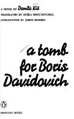
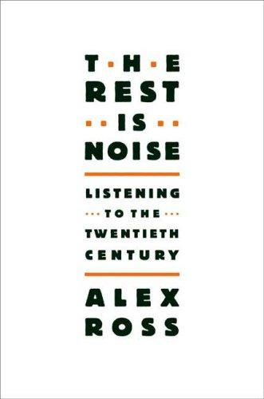
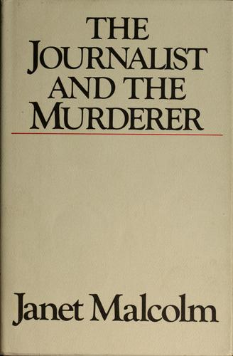
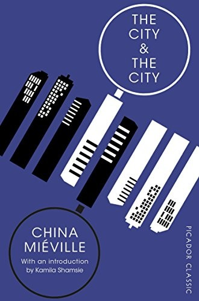
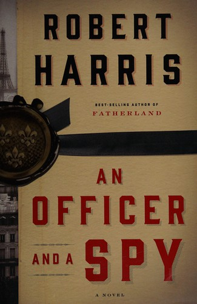
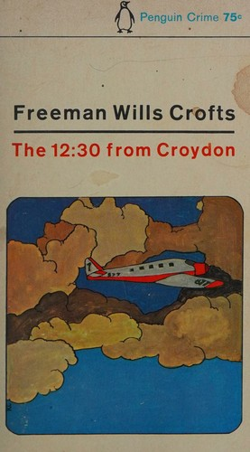

Recommendations for the week of 19 October 2026.
This week rotates the three highbrow edges onto a fresh set: the translated-fiction thread reaches the former Yugoslavia for the first time with Kiš's forged-biography stories of the Stalinist terror; the narrative-nonfiction pick opens a wholly new domain — twentieth-century music — as a history of how art answers to power; and the forensic-nonfiction edge returns with Malcolm's cold, self-implicating essay on the ethics of journalism, wired to the criminology and epistemology-of-evidence interest. The comfort picks hold the three best-loved veins — big-idea SF, cold-weather espionage, Golden-Age crime — while reaching for fresh authors and structures: a crime-SF built on one vertiginous idea about perception, a meticulous Dreyfus-affair thriller, and an inverted Golden-Age puzzle told from the killer's side.





